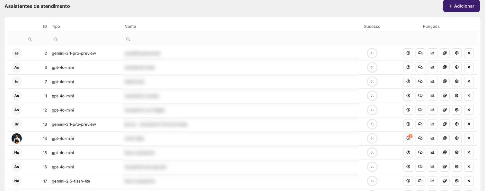
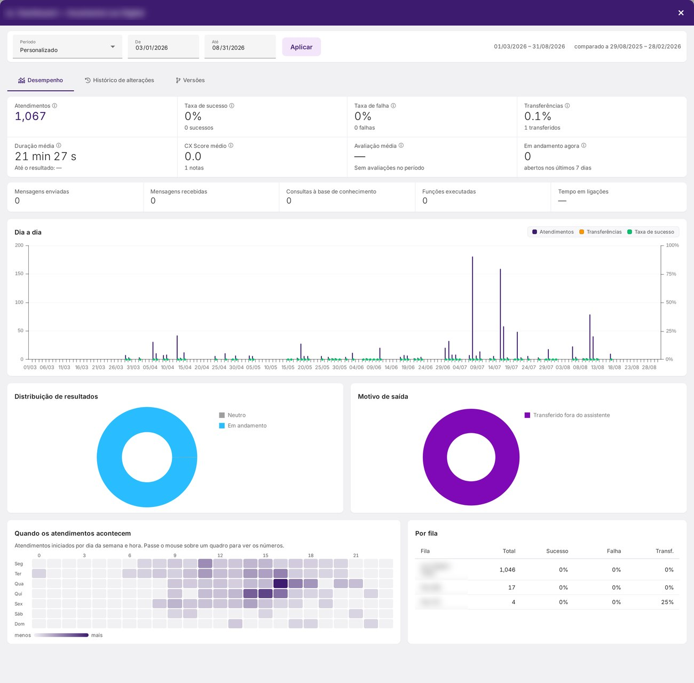
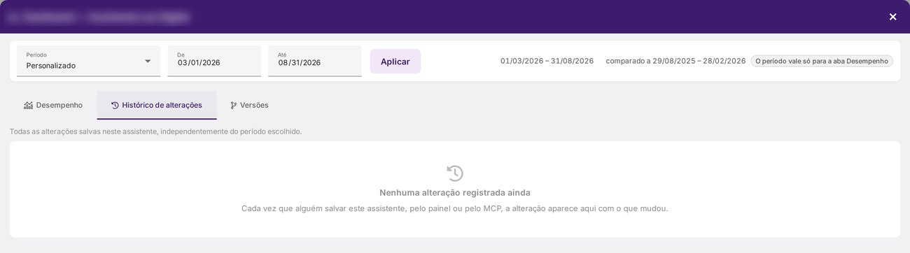
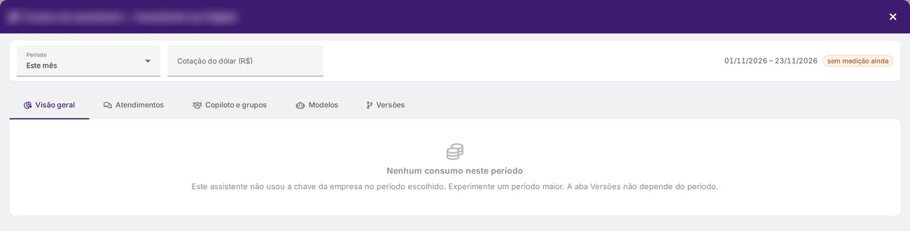

Desempenho, versões e custos do assistente de IA
Cada assistente tem um painel próprio com o que aconteceu nos atendimentos, um histórico do que mudou a cada salvamento e um relatório de custo por atendimento, por contexto e por modelo. Os três respondem perguntas diferentes — e é justamente por isso que precisam ser lidos juntos.
1. As três visões e onde elas ficam
Na tela Assistentes de atendimento, cada linha da grade traz, à direita, os atalhos do assistente daquela linha. Os dois que interessam a este capítulo são o gráfico e a moeda:
| Atalho na linha | O que abre | Para que serve |
|---|---|---|
| Dashboard de estatísticas (ícone de barras) | Janela Dashboard, com as abas Desempenho, Histórico de alterações e Versões | Entender o comportamento do assistente: volume, resultado, motivo de saída, horários, filas e o que mudou entre uma configuração e outra. |
| Custos do assistente (ícone de moedas) | Janela Custos do assistente, com as abas Visão geral, Atendimentos, Copiloto e grupos, Modelos e Versões | Ver quanto o assistente consumiu, onde esse consumo aconteceu e quanto custou cada atendimento resolvido. |
| Perguntas não respondidas | Lista de perguntas que o assistente não soube responder | Priorizar lacunas de conhecimento. Ver o capítulo de IA. |
| Últimos atendimentos | Lista dos atendimentos recentes do assistente | Conferir caso a caso o que o painel mostra agregado. |
| Configurar assistente | Editor do assistente | Alterar prompt, conhecimento, funções e conectores. Cada salvamento passa a aparecer no histórico. |

2. Qual é a base dos números
Antes de comparar dois assistentes — ou o mesmo assistente em dois meses — vale fixar quatro regras que explicam quase toda leitura errada:
- O recorte é por data de início do atendimento. Um atendimento que começou em março e terminou em abril entra em março.
- O resultado é o que o assistente registrou. Enquanto ele não fecha um desfecho, o atendimento conta como Em andamento — inclusive quando já foi encerrado por outra pessoa ou por uma regra. Isso é o que faz um assistente parecer “sem sucesso” mesmo tendo conversado muito.
- A comparação é com o período anterior de mesmo tamanho. Um recorte de 1 a 31 de agosto é comparado com 1 a 31 de julho; um recorte de 30 dias é comparado com os 30 dias imediatamente anteriores.
- O período escolhido vale apenas para a aba Desempenho. A própria janela avisa isso com a etiqueta O período vale só para a aba Desempenho. Histórico e versões são sempre completos; no relatório de custo, a aba Versões também não depende do período.
2.1 Períodos disponíveis
O seletor Período abre com Últimos 30 dias e oferece Este mês, Mês anterior, Últimos 7 dias, Últimos 90 dias e Personalizado. No modo personalizado aparecem os campos De e Até e o botão Aplicar. O intervalo é validado na hora:
- Informe as duas datas do período. — falta uma das pontas.
- A data inicial é posterior à data final. — as datas estão invertidas.
- O período pode ter no máximo 366 dias. — recortes maiores precisam ser fatiados.
3. Aba Desempenho
É o retrato do assistente no período: oito indicadores no topo, cinco contadores de apoio, quatro gráficos e uma tabela por fila. Cada indicador traz um ícone de informação com a definição oficial — o texto abaixo reproduz o que a tela explica.
3.1 Indicadores principais
| Indicador | O que conta | Como interpretar |
|---|---|---|
| Atendimentos | Atendimentos e ligações em que o assistente atuou, iniciados no período. | Quando há ligações, a linha de apoio mostra quantas foram por voz. É o denominador de todos os percentuais. |
| Taxa de sucesso | Atendimentos que o assistente concluiu com resultado de sucesso. | Fica “—” quando não há resultado registrado no período — o que é diferente de 0%. |
| Taxa de falha | Atendimentos que terminaram com resultado de falha. | Sucesso + falha + neutro + em andamento fecham o total de atendimentos. |
| Transferências | Atendimentos que saíram do assistente por transferência — feita por ele ou por fora dele. | Transferir não é erro: é o desfecho esperado quando o assunto exige uma pessoa. O que se acompanha é a proporção. |
| Duração média | Tempo médio dos atendimentos encerrados no período. | A linha de apoio traz Até o resultado: …, o tempo médio até o assistente registrar o desfecho. |
| CX Score médio | Nota de 1 a 5 dada pela análise de IA de cada atendimento. | A linha de apoio mostra quantas notas entraram na média. Sem notas, aparece Sem notas no período. |
| Avaliação média | Média das avaliações dadas pelos clientes na pesquisa de satisfação. | Depende da pesquisa estar ativa na fila e de o cliente responder. Sem respostas, Sem avaliações no período. |
| Em andamento agora | Atendimentos com este assistente ainda abertos neste momento. | Recorte de agora, não do período: serve para saber se há conversa travada em andamento. |
3.2 Contadores de apoio
Abaixo dos indicadores principais há uma faixa menor, com o volume de trabalho do assistente: Mensagens enviadas (enviadas pelo assistente aos clientes), Mensagens recebidas (dos clientes), Consultas à base de conhecimento, Funções executadas (funções, conectores e procedimentos) e Tempo em ligações, que mostra também quantas ligações compõem o total.
Essa faixa é o melhor lugar para descobrir por que o custo subiu sem o volume de atendimentos subir: mais consultas por atendimento, mais funções executadas ou chamadas de voz mais longas explicam consumo mesmo com a mesma quantidade de conversas.
3.3 Dia a dia
Barras de Atendimentos e Transferências no eixo da esquerda e uma linha de Taxa de sucesso no eixo da direita, com os dias organizados na ordem do calendário. Duas leituras úteis:
- Pico de barras com linha de sucesso baixa indica dia atípico — vale abrir o mesmo recorte na aba Por fila para descobrir se o volume veio de uma fila específica.
- Barras de transferência acompanhando o volume, com taxa de sucesso estável, indicam que o assistente está triando e encaminhando como deveria.
3.4 Distribuição de resultados
Rosca com os quatro desfechos possíveis: Sucesso, Falha, Neutro e Em andamento. Só aparecem as fatias com valor maior que zero — uma rosca dominada por Em andamento é o sintoma clássico de assistente que conversa e não conclui: o desfecho nunca é registrado.
3.5 Motivo de saída
A segunda rosca mostra por onde o atendimento saiu do assistente. São quatro rótulos fixos:
| Motivo | Definição na tela |
|---|---|
| Transferido fora do assistente | Transferido por um atendente ou por uma regra fora do assistente. |
| Transferido pelo assistente | O próprio assistente transferiu o atendimento. |
| Encerrado fora do assistente | Encerrado por um atendente, pelo cliente ou por uma regra fora do assistente. |
| Encerrado pelo assistente | O próprio assistente encerrou o atendimento. |
A diferença entre “pelo assistente” e “fora do assistente” é o que separa autonomia de intervenção humana. Uma proporção alta de Transferido fora do assistente costuma significar que o time assume a conversa antes de o assistente terminar — normalmente por falta de confiança no roteiro, não por falha técnica.
3.6 Quando os atendimentos acontecem
Mapa de calor de segunda a domingo por hora do dia (0 a 23). A legenda vai de menos a mais e cada quadro mostra, ao passar o mouse, o dia, a hora, o total de atendimentos e a taxa de sucesso daquela combinação. Use para decidir janela de atendimento e escala: blocos escuros fora do horário comercial indicam demanda que hoje cai em fila sem gente.
3.7 Por fila
Fecha a aba com a distribuição por fila: Fila, Total e os percentuais de Sucesso, Falha e Transf. sobre o total daquela fila, ordenado do maior volume para o menor. Atendimentos sem fila aparecem como Sem fila.

4. Aba Histórico de alterações
O histórico não é um log técnico: é a linha do tempo das configurações salvas do assistente, com o que mudou em cada uma. A tela explica o próprio escopo — Todas as alterações salvas neste assistente, independentemente do período escolhido.
4.1 O que é registrado
- Cada salvamento, de qualquer origem. A própria tela diz: Cada vez que alguém salvar este assistente, pelo painel ou pelo MCP, a alteração aparece aqui com o que mudou. O rótulo de origem aparece como Painel ou MCP.
- Quem salvou. O nome do usuário; quando não há identificação, aparece Usuário não identificado.
- Quais campos mudaram. Um conjunto de etiquetas resume os campos alterados (até quatro na lista; o restante no detalhe).
- O antes e o depois. Selecionar uma alteração abre o detalhe com Antes e Depois.
4.2 Como ler a diferença
Textos longos — contexto inicial, descrição da base, procedimentos — aparecem como diff, linha a linha: + para o que entrou, − para o que saiu e … N linhas sem alteração … para os trechos preservados. Três avisos merecem atenção:
- Credencial alterada (o valor não é exibido). Chaves e senhas entram no histórico como evento, nunca como conteúdo — o histórico não é caminho para recuperar segredo.
- Diferenças demais para comparar linha a linha. Em mudanças grandes, a tela mostra o texto anterior inteiro e o novo inteiro, sem diff. É sinal de reescrita, não de ajuste fino.
- Esta alteração não tem detalhes registrados. O evento existe, mas o conteúdo da alteração não foi guardado — normalmente ajustes anteriores à entrada do recurso.
| Etiqueta | Campo do assistente |
|---|---|
| Criação do assistente | Evento inicial do cadastro |
| Nome do assistente | Nome exibido na lista |
| Assinatura | Assinatura usada nas mensagens |
| Descrição do perfil / Descrição interna | Textos de caracterização do assistente |
| Contexto inicial | Prompt principal |
| Descrição da base de conhecimento / Resultados da busca | Como a base é descrita e quantos resultados a busca traz |
| Automação de pré-processamento / pós-processamento | Fluxos ligados antes e depois da resposta |
| Limite de mensagens | Teto de mensagens por atendimento |
| Funções, Servidores MCP, Conectores, Procedimentos | Ferramentas que o assistente pode executar |
| FAQs e grupos de FAQ | Conteúdo de conhecimento vinculado |
4.3 O bloco de impacto
Depois do diff, a alteração mostra o efeito medido: Depois desta alteração: com o número de Sucesso e o Custo por sucesso do período seguinte àquele salvamento. É o único lugar do produto que responde “essa mudança de prompt melhorou alguma coisa?” com número em vez de opinião. Dois avisos qualificam a leitura:
- amostra pequena (N atendimentos) — abaixo de vinte atendimentos a taxa e o custo ainda variam muito.
- parcial — parte do consumo usou modelo sem preço conhecido; o custo está subestimado.
4.4 Quando a aba está vazia
Nenhuma alteração registrada ainda significa que o assistente ainda não foi salvo depois que o recurso entrou em operação. Criar o assistente e nunca editar produz exatamente esse estado. O detalhe à direita mostra Escolha uma alteração na lista para ver o que mudou. até você selecionar uma entrada.

5. Aba Versões
Cada salvamento que muda a configuração gera uma versão. A aba cruza, versão por versão, o desempenho e o custo do período em que aquela configuração esteve em vigor — e é o lugar correto para responder “a versão nova é melhor que a anterior?”.
- Até as 15 alterações mais recentes. O histórico completo continua na aba anterior; aqui entram as quinze últimas.
- As setas comparam cada versão com a anterior. Verde é melhora (mais sucesso, menos custo), vermelho é piora.
- Custos das versões são estimados em dólar — o mesmo critério do relatório de custo.
- A primeira versão não tem com o que comparar. Ela aparece com Período anterior à primeira alteração registrada.
- Menos de 20 atendimentos em uma versão gera o aviso de que a taxa e o custo ainda podem mudar muito.
O botão Ver o que mudou nesta versão leva ao detalhe da alteração correspondente, com o diff da seção 4.
6. Custos do assistente
O relatório de custo responde onde o dinheiro foi consumido, com que modelo e com qual resultado. Ele não é um espelho da fatura do provedor: é uma estimativa calculada a partir do consumo registrado.
6.1 Pré-requisito: a chave da empresa
A medição só existe para consumo feito com a chave própria cadastrada na IA Avançada. Sem isso a janela abre com Nenhum consumo neste período e a explicação: Este assistente não usou a chave da empresa no período escolhido. Experimente um período maior. A aba Versões não depende do período. Quando a medição começou no meio do recorte, o aviso muda para O consumo deste assistente passou a ser medido em dd/mm/aaaa.
6.2 Cotação do dólar
O campo Cotação do dólar (R$), na barra superior, converte os valores estimados em dólar para reais na leitura corrente. O botão ao lado remove a cotação e volta a exibir apenas dólar. É um recurso de leitura: não altera o valor gravado nem a origem do cálculo.
6.3 Visão geral
Seis indicadores e três blocos:
| Indicador | Como é calculado |
|---|---|
| Custo total | Soma do consumo do período, com a linha de apoio mostrando quantas chamadas ao modelo entraram. |
| Atendimentos | Atendimentos que começaram no período, com custo atribuído. |
| Custo médio por atendimento | Média por atendimento iniciado. Traz também a mediana (metade custou menos que isso) e 90% até (teto de nove em cada dez atendimentos). |
| Custo por sucesso | Custo de todos os atendimentos — inclusive falhas, neutros e em andamento — dividido pelo número de sucessos. |
| Custo por mensagem | Custo dividido pelas mensagens trocadas. |
| Custo por minuto de voz | Custo das ligações dividido pelos minutos de conversa por voz. |
Os blocos fecham a visão: Custo dia a dia (série diária), Onde o assistente foi usado — contexto, custo e parte do total, com contextos como Agente, Assistente de IA, URA, Automação, Campanha, API e agendamentos, Celular e Sistema e integrações — e No que o custo foi gasto, por categoria, com chamadas, custo e participação.
6.4 Atendimentos
Transforma o custo em decisão operacional: Custo por resultado (sucesso, falha, neutro, em andamento), Custo por motivo de saída, Custo por fila e Os N atendimentos mais caros, com início, fila, canal, resultado, motivo de saída, duração, mensagens e custo. Em cada linha há o atalho Ver histórico do atendimento. O custo mostrado é só deste assistente — não é o custo total daquele atendimento.
6.5 Copiloto e grupos
Separa dois usos que não passam pelo fluxo normal: Copiloto, por usuário — Uso do assistente pelos atendentes, dentro dos atendimentos, com dias com uso, chamadas e custo por usuário — e Grupos do WhatsApp e do Telegram — Respostas do assistente em grupos, por grupo e por fila. É assim que se descobre se o custo está vindo do atendimento automático ou do apoio ao time.
6.6 Modelos
Tabela Consumo por modelo de IA com Modelo, Provedor, Chamadas, Entrada, Do cache, Saída, Raciocínio, Áudio, Custo e Origem do valor. A dica da tela resume o uso: Passe o mouse sobre um número para ver a quantidade exata.
Duas colunas explicam a maior parte das divergências: Do cache mostra o que foi reaproveitado (token em cache custa uma fração do token novo) e Origem do valor diz se o custo veio do provedor ou do preço de tabela.
6.7 Versões
Efetividade e custo por versão repete, no relatório de custo, o cruzamento da aba Versões do painel: cada configuração com o desempenho e o custo do período em que esteve em vigor, comparada com a anterior. Não depende do período selecionado.
6.8 Avisos que mudam a leitura
| Aviso na tela | O que significa |
|---|---|
| Valores estimados em dólar pelo preço de tabela de dd/mm/aaaa; confira os valores oficiais no painel do provedor. | O cálculo usa tabela de preço, não a fatura. Divergência de centavos é esperada. |
| N chamada(s) usaram um modelo sem preço conhecido e não entram no total: o custo real é maior que o mostrado. | Modelo sem preço cadastrado. O consumo existe, o valor não é somado. |
| O período tem atendimentos demais para uma única consulta: as métricas de atendimento consideram só parte deles. | Recorte excessivo: reduza o período para ter números completos. |
| Nenhum atendimento com este assistente começou no período: todo o custo veio de … | Houve consumo (testes, copiloto, grupos) sem atendimento iniciado — por isso as médias aparecem como “—”. |
| “Testes” é o uso na aba “Testar” do editor e não entra nas métricas de atendimento. | Simulações do editor aparecem como consumo, mas ficam fora das métricas de atendimento. |
| Valor parcial: parte das chamadas usou um modelo sem preço conhecido. | Marca as linhas em que o valor está subestimado. |

7. Custo por sucesso não é custo médio dos sucessos
Custo por sucesso: custo de todos os atendimentos do período — inclusive falhas, neutros e em andamento — dividido pelo número de sucessos. Responde “quanto custou, de fato, cada atendimento resolvido”.
Custo médio dos atendimentos com sucesso: média apenas entre os atendimentos que terminaram com sucesso. Responde “quanto custa um atendimento quando dá certo”.
Os dois números são diferentes por definição, e o segundo é sempre menor ou igual ao primeiro. Comparar um com o outro como se fossem o mesmo indicador é o erro mais comum em relatório de custo de IA.
8. Roteiro de leitura em sete passos
- Escolha o período e olhe só os indicadores. Um mês fechado costuma ser melhor que “últimos 30 dias”: a comparação com o período anterior fica alinhada ao calendário.
- Confira a taxa de sucesso contra a rosca de resultados. Se Em andamento domina, o problema é de desfecho registrado, não de qualidade da conversa — corrija o encerramento antes de mexer no prompt.
- Abra Motivo de saída. Muita transferência “fora do assistente” indica que o time assume antes do fim; muita transferência “pelo assistente” indica roteiro de escalonamento funcionando.
- Vá para Por fila. Uma fila concentrando o volume explica sozinha o resultado geral; ajuste a leitura por fila antes de concluir qualquer coisa sobre o assistente.
- Abra Histórico de alterações e veja a última mudança. O bloco de impacto mostra sucesso e custo por sucesso depois daquela alteração — é a evidência para manter ou reverter.
- Abra Versões quando houver mais de duas mudanças no período: a comparação entre versões mostra tendência, o histórico mostra causa.
- Feche no relatório de custo. Confira Custo por sucesso, depois Modelos e Copiloto e grupos. Se o custo subiu sem o volume subir, a resposta está em Modelos (modelo trocado, mais tokens de entrada, menos cache) ou em Copiloto.
9. Os mesmos dados pela API
As três abas leem endpoints próprios do backend, autenticados com o mesmo token do login (POST /login devolve token; use Authorization: Bearer <token>). Todos são de leitura e devolvem o objeto dentro de data.
| Endpoint | Parâmetros | Devolve |
|---|---|---|
/assistantchathistory/performance | fk_assistant, from, to (AAAA-MM-DD) | Período atual e anterior, indicadores, série diária, mapa de calor e distribuição por fila. |
/assistantchathistory/costReport | fk_assistant, from, to | Totais de consumo, custo por atendimento, por contexto, por categoria, por modelo, copiloto, grupos e atendimentos mais caros. |
/assistantchathistory/revisions | fk_assistant | Lista de alterações salvas, com autor, origem e campos alterados. |
/assistantchathistory/revision | fk_assistant, id | Detalhe da alteração, com o conteúdo anterior e o novo. |
/assistantchathistory/versions | fk_assistant | Versões com desempenho e custo do período em que estiveram em vigor. |
Exemplo de leitura do painel de um assistente em um mês fechado:
TOKEN=$(curl -s -X POST https://sua-instancia.atenderbem.com/login \
-H 'Content-Type: application/json' \
-d '{"username":"usuario","password":"senha"}' | jq -r .token)
curl -s "https://sua-instancia.atenderbem.com/assistantchathistory/performance?fk_assistant=12&from=2026-08-01&to=2026-08-31" \
-H "Authorization: Bearer $TOKEN"Resposta recortada (chaves reais; valores de exemplo de um assistente em operação):
{
"data": {
"period": { "from": "2026-08-01", "to": "2026-08-31", "days": 31 },
"previousPeriod": { "from": "2026-07-01", "to": "2026-07-31" },
"current": {
"total": 1067, "success": 0, "failure": 0, "neutral": 1, "inProgress": 1066,
"successRate": 0, "failureRate": 0, "transferRate": 0.0937,
"exitReasons": { "externalTransfer": 1, "assistantTransfer": 0,
"externalClose": 0, "assistantClose": 0 },
"avgDurationSeconds": 1287, "avgTimeToResultSeconds": 0,
"kbQueries": 0, "funcExecutions": 0,
"msgsSent": 0, "msgsReceived": 0, "calls": 0, "voiceSeconds": 0,
"avgAiScore": 0, "avgGrade": null, "aiScoreCount": 1, "gradeCount": 0
},
"inProgressNow": 0,
"daily": [ { "day": "2026-08-12", "total": 41, "success": 0, "failure": 0,
"transfers": 0, "avgDurationSeconds": 0 } ],
"heatmap": [ { "weekday": 3, "hour": 15, "total": 84, "success": 0 } ],
"byQueue": [ { "queueId": 174, "total": 1046, "success": 0, "failure": 0, "transfers": 0 } ]
}
}inProgress antes de acusar falha. No exemplo, 1.066 de 1.067 atendimentos não têm desfecho registrado — o painel mostra 0% de sucesso e isso não quer dizer que o assistente não atendeu: quer dizer que ninguém fechou o resultado. O número que denuncia o problema é inProgress, não successRate.
10. Perguntas frequentes
O painel mostra 0% de sucesso, mas o assistente responde
Quase sempre é desfecho não registrado. Olhe a fatia Em andamento na aba Desempenho e o campo inProgress na API: se ela concentra o volume, o assistente conversa e não conclui. Ajuste o roteiro para registrar o resultado (ou encerrar) antes de concluir que a qualidade caiu.
A taxa de sucesso aparece com traço e não com 0%
Traço significa “não há base de cálculo” — nenhum atendimento com desfecho no período. 0% significa que houve atendimentos e nenhum terminou com sucesso. São leituras diferentes: a primeira pede mais dados, a segunda pede correção.
O custo não aparece, mesmo com atendimentos
O relatório de custo só mede consumo feito com a chave própria da empresa. Se o assistente rodou com a cota ou a chave compartilhada, a janela mostra Nenhum consumo neste período. Verifique também se a medição começou depois do início do recorte — a etiqueta sem medição ainda e o aviso de data inicial de medição indicam isso.
As médias por atendimento mostram “—”
Acontece quando houve consumo sem nenhum atendimento iniciado no período (testes no editor, copiloto ou respostas em grupo). A própria tela explica: Nenhum atendimento com este assistente começou no período: todo o custo veio de …. Dividir custo por zero atendimento não é um número válido — por isso o traço.
O histórico está vazio, mas o assistente já foi editado
O registro começa a valer a partir do primeiro salvamento feito com o recurso em operação. Edições anteriores não são reconstruídas. O assistente criado e nunca editado também aparece vazio — não há alteração para listar.
A versão nova não aparece na comparação
Duas causas: a aba mostra até as 15 alterações mais recentes — em assistentes com muitas edições, a versão antiga sai da lista; ou a versão ainda não teve atendimentos no período em que esteve em vigor, e nesse caso não há número para comparar.
O histórico mostra “MCP” em vez do nome da pessoa
A origem MCP indica alteração feita por integração, não pelo painel. O autor aparece quando o sistema o identifica; caso contrário, a entrada traz Usuário não identificado. Para auditoria nominal, combine o histórico com o Log de Auditoria.
Posso recuperar uma credencial pelo histórico
Não. Credenciais aparecem como Credencial alterada (o valor não é exibido). O histórico registra o evento para auditoria, não guarda o segredo — a chave precisa ser cadastrada novamente na configuração do assistente.
11. Checklist de acompanhamento
- Definir um período fechado (mês anterior) e manter o mesmo recorte em todas as leituras.
- Conferir Taxa de sucesso junto de Em andamento antes de qualquer conclusão.
- Ler Transferências separando “pelo assistente” de “fora do assistente”.
- Olhar Por fila quando o número geral mudar sem explicação.
- Ler o bloco de impacto da última alteração antes de mexer no prompt de novo.
- Comparar Custo por sucesso entre versões, não entre assistentes diferentes.
- Registrar, no próprio histórico, o motivo de cada mudança — o próximo a ler o diff é você mesmo.